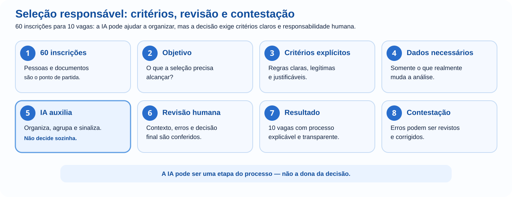

A escola abriu 10 vagas para um projeto e recebeu 60 inscrições. Para economizar tempo, alguém sugere: “vamos mandar as fichas para uma IA e pedir que escolha os 10 melhores”. A ideia parece eficiente até surgirem perguntas difíceis: o que significa “melhor”? Quais dados devem ser enviados? Notas e faltas contam? A IA pode decidir sozinha? E se um aluno for prejudicado por um critério que ninguém percebeu?
Este módulo começa aí porque ética não é uma lista de proibições colocada depois que a tecnologia está pronta. Ela aparece dentro da decisão: no problema escolhido, nos dados usados, nos critérios, na possibilidade de contestação e na responsabilidade de quem age sobre o resultado.
Quanto maior a consequência para uma pessoa, mais precisamos de critérios explícitos, evidência, revisão e responsabilidade humana.
Nos tópicos 1 a 12, as perguntas e microdecisões são para você parar e formar um julgamento próprio. Não há prompt escondido para copiar nem obrigação de abrir uma IA.
No laboratório e no desafio final, escreva suas respostas antes de avançar. A proposta é decidir se, como e até onde a IA deve participar — inclusive quando a melhor decisão for não usá-la.
As situações com inscrições, notas, faltas e observações são casos didáticos fictícios. Não envie fichas reais de alunos ou outros dados pessoais para realizar esta atividade.

Usar IA para sugerir um título de cartaz e usar IA para escolher quem recebe uma oportunidade não têm o mesmo peso. No segundo caso, alguém pode perder algo importante.
Sugerir títulos, reorganizar um texto ou criar alternativas de layout. Um erro costuma ser simples de corrigir.
Selecionar pessoas, avaliar desempenho, negar acesso, indicar risco ou produzir uma acusação. Um erro pode gerar prejuízo difícil de desfazer.
Essa pergunta muda o nível de cuidado necessário antes mesmo de escolher a ferramenta.
Nas inscrições aparecem nome, idade, turma, notas, faltas, telefone, texto de motivação e observações de professores. A equipe percebe que “mandar tudo” é uma decisão, não uma etapa neutra.
Informações pessoais entram na análise mesmo sem relação clara com o objetivo.
A equipe define primeiro quais critérios são legítimos e só então escolhe os dados necessários.
A IA não recebe uma definição de “melhor aluno”. Ela pode privilegiar notas, frequência, palavras do texto de motivação ou algum padrão aprendido que a equipe nem pretendia usar.
Uma diferença injusta pode surgir dos dados disponíveis, da forma como o problema foi definido, dos critérios escolhidos ou do modo como o sistema generaliza padrões.
Ao analisar inscrições antigas, alguém percebe que alunos com mais faltas participaram menos até o fim do projeto. Surge a tentação: “então faltas provam falta de compromisso”. Mas uma associação não explica sozinha o motivo das faltas nem o comportamento futuro de uma pessoa.
“O padrão apareceu, então essa característica causa o problema.”
“Há uma associação nos dados. Precisamos investigar contexto e outras variáveis antes de transformá-la em critério.”
Quando correlação vira explicação sem evidência, um dado pode se transformar em filtro, punição ou exclusão.
Mesmo com critérios definidos, erros podem acontecer: dado desatualizado, informação incompleta, interpretação ruim ou regra mal aplicada. A pessoa afetada precisa ter alguma forma de revisão.
| Pergunta | Por que importa? |
|---|---|
| Quais dados entraram? | Dados errados ou incompletos alteram o resultado. |
| Quais critérios foram usados? | O sistema não deveria inventar o que a instituição nunca decidiu. |
| Quem revisa? | Uma pessoa precisa conseguir corrigir erro relevante. |
| Como contestar? | Quem é afetado não deveria ficar diante de uma decisão impossível de revisar. |
Um estudante pede à IA para escrever todo o relatório e entrega sem ler. Outro usa IA para organizar a estrutura, escreve o conteúdo, confere fontes e consegue explicar cada decisão. Ambos “usaram IA”, mas o processo de autoria é diferente.
Ideias, estrutura, perguntas, revisão e alternativas.
Partes do texto, código, imagem ou análise são produzidas pela ferramenta.
Quem entrega continua responsável por conferir, assumir e explicar o resultado.
O problema não é apenas “a IA pode alucinar”. O problema é que a referência vem formatada como se estivesse pronta para uso. A forma transmite confiança antes de existir evidência.
A IA pode indicar um caminho. A evidência vem da fonte real.
A voz parece conhecida, o tom é urgente e várias pessoas começam a encaminhar. Não há comunicado oficial. Em 2026, áudio, imagem e vídeo convincentes já não podem ser tratados sozinhos como prova de que algo aconteceu.
Sinais de proveniência e rotulagem podem ajudar quando existem, mas não substituem a verificação do fato. O Panorama de IA · Setembro de 2026 aprofunda essa atualização; você pode consultá-lo agora como referência ou deixá-lo para depois de concluir a trilha.
A escola decide usar IA para organizar respostas abertas de uma pesquisa. Dizer apenas “houve uso de IA” não explica se a ferramenta decidiu, classificou, resumiu ou apenas ajudou a preparar o material.
“Usamos IA.”
“A IA ajudou a sugerir categorias para respostas abertas. A equipe revisou a classificação e tomou a decisão final.”
Quanto maior a consequência, mais importante é tornar compreensível qual papel a tecnologia teve e onde entrou a revisão humana.
Automatizar a análise das inscrições economiza horas. Mas o ganho precisa ser comparado com riscos: dados expostos, erros repetidos em escala, critérios difíceis de contestar, dependência da ferramenta ou perda de aprendizagem.
Considere uma diferença: uma IA sugere um e-mail para os candidatos; outra está conectada ao sistema e consegue enviar as mensagens. No segundo caso, um erro pode sair da tela e atingir pessoas sem uma nova oportunidade de revisão.
O sistema classifica, gera e envia a resposta sem que ninguém confira os casos importantes.
A IA organiza ou prepara rascunhos; decisões e ações de consequência relevante exigem aprovação humana.
É comum ouvir “foi o sistema que escolheu”. Mas pessoas decidiram adotar a ferramenta, escolher dados, configurar critérios, conceder permissões e agir sobre o resultado.
Desenvolvedores, fornecedores, instituições e usuários podem ter responsabilidades diferentes. A automação não transforma uma decisão humana em algo sem responsável.
Volte à situação que abriu o módulo. Agora você precisa decidir como a IA participará do processo — e talvez concluir que ela não deve fazer certas partes.
Situação fictícia: 60 inscrições para 10 vagas. As fichas contêm nome, idade, turma, notas, texto de motivação, faltas e observações de professores.
Trabalhe apenas com esta descrição fictícia. Não use fichas, nomes, notas, telefones ou observações reais de estudantes.
FAÇA AGORA: escreva o que a seleção precisa alcançar e que problema a comissão está realmente tentando resolver. Pare antes de seguir.
FAÇA AGORA: escreva o que torna um candidato adequado ao projeto e verifique se os critérios conseguiriam ser explicados publicamente.
FAÇA AGORA: para cada campo da ficha, justifique por que ele altera um critério legítimo. Se não conseguir justificar, retire-o da análise.
FAÇA AGORA: imagine pelo menos dois casos em que um critério aparentemente objetivo poderia prejudicar alguém por causa de contexto não observado.
FAÇA AGORA: escolha e justifique: a IA deve selecionar, criar ranking, organizar informações, sinalizar fichas incompletas ou não participar dessa parte?
FAÇA AGORA: defina quem revisa, como um erro é corrigido e como um candidato poderia questionar uma informação incorreta.
Você deve conseguir explicar suas decisões sem usar a frase “porque a IA achou melhor”. Ética entrou antes da ferramenta: na definição do problema, nos critérios, nos dados, no grau de automação e na forma de reparar um erro.
Escolha uma situação da escola, trabalho ou vida cotidiana em que alguém queira usar IA: seleção, avaliação, atendimento, criação de conteúdo, análise de dados, monitoramento ou comunicação. Descreva a situação sem expor dados pessoais reais.
Uma boa resposta não é “usar” nem “proibir” IA por princípio. É conseguir justificar o nível de uso adequado considerando benefício, risco, evidência, pessoas afetadas e responsabilidade.
Nos seis módulos, a IA deixou de ser uma caixa mágica e passou a ser uma tecnologia que você precisa compreender, orientar, testar e julgar.
Usar IA bem não é entregar mais decisões à máquina. É aprender a decidir melhor quando, como, para quê e até onde usar a máquina.